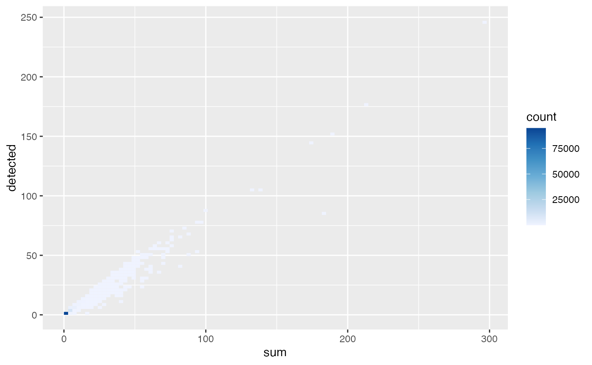
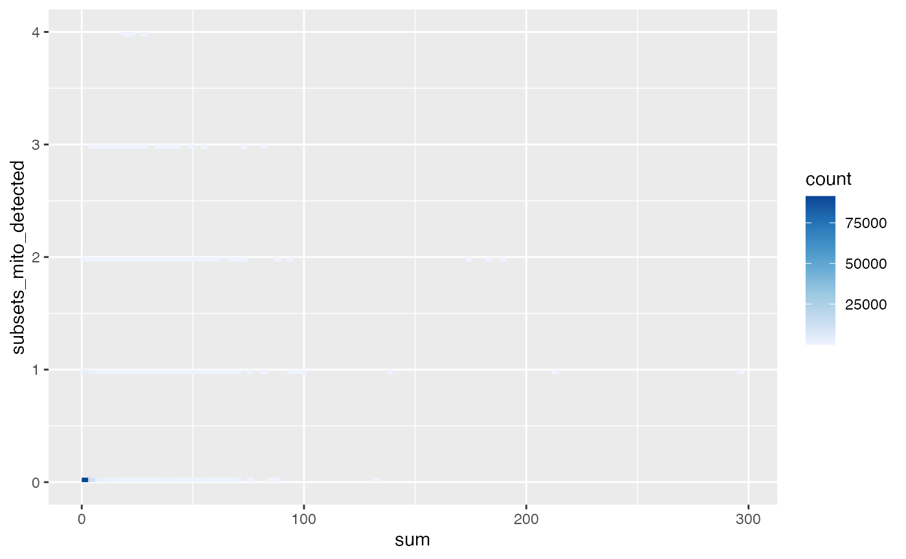

SPLiT-seq basic quality control
Kayla Jackson and A. Sina Booeshaghi
2023-07-24
Source:vignettes/vig9_splitseq.Rmd
vig9_splitseq.RmdIntroduction
The data in this vignette is shipped with the cellatlas
repository. The count matrix and metadata are provided in the
cellatlas/examples folder as an AnnData
object. We will begin by loading the object and converting it to a
SpatialFeatureExperiment object.
library(zellkonverter)
#> Registered S3 methods overwritten by 'zellkonverter':
#> method from
#> py_to_r.numpy.ndarray reticulate
#> py_to_r.pandas.core.arrays.categorical.Categorical reticulate
library(stringr)
library(Matrix)
library(SpatialExperiment)
#> Loading required package: SingleCellExperiment
#> Loading required package: SummarizedExperiment
#> Loading required package: MatrixGenerics
#> Loading required package: matrixStats
#>
#> Attaching package: 'MatrixGenerics'
#> The following objects are masked from 'package:matrixStats':
#>
#> colAlls, colAnyNAs, colAnys, colAvgsPerRowSet, colCollapse,
#> colCounts, colCummaxs, colCummins, colCumprods, colCumsums,
#> colDiffs, colIQRDiffs, colIQRs, colLogSumExps, colMadDiffs,
#> colMads, colMaxs, colMeans2, colMedians, colMins, colOrderStats,
#> colProds, colQuantiles, colRanges, colRanks, colSdDiffs, colSds,
#> colSums2, colTabulates, colVarDiffs, colVars, colWeightedMads,
#> colWeightedMeans, colWeightedMedians, colWeightedSds,
#> colWeightedVars, rowAlls, rowAnyNAs, rowAnys, rowAvgsPerColSet,
#> rowCollapse, rowCounts, rowCummaxs, rowCummins, rowCumprods,
#> rowCumsums, rowDiffs, rowIQRDiffs, rowIQRs, rowLogSumExps,
#> rowMadDiffs, rowMads, rowMaxs, rowMeans2, rowMedians, rowMins,
#> rowOrderStats, rowProds, rowQuantiles, rowRanges, rowRanks,
#> rowSdDiffs, rowSds, rowSums2, rowTabulates, rowVarDiffs, rowVars,
#> rowWeightedMads, rowWeightedMeans, rowWeightedMedians,
#> rowWeightedSds, rowWeightedVars
#> Loading required package: GenomicRanges
#> Loading required package: stats4
#> Loading required package: BiocGenerics
#>
#> Attaching package: 'BiocGenerics'
#> The following objects are masked from 'package:stats':
#>
#> IQR, mad, sd, var, xtabs
#> The following objects are masked from 'package:base':
#>
#> anyDuplicated, aperm, append, as.data.frame, basename, cbind,
#> colnames, dirname, do.call, duplicated, eval, evalq, Filter, Find,
#> get, grep, grepl, intersect, is.unsorted, lapply, Map, mapply,
#> match, mget, order, paste, pmax, pmax.int, pmin, pmin.int,
#> Position, rank, rbind, Reduce, rownames, sapply, setdiff, sort,
#> table, tapply, union, unique, unsplit, which.max, which.min
#> Loading required package: S4Vectors
#>
#> Attaching package: 'S4Vectors'
#> The following objects are masked from 'package:Matrix':
#>
#> expand, unname
#> The following object is masked from 'package:utils':
#>
#> findMatches
#> The following objects are masked from 'package:base':
#>
#> expand.grid, I, unname
#> Loading required package: IRanges
#> Loading required package: GenomeInfoDb
#> Loading required package: Biobase
#> Welcome to Bioconductor
#>
#> Vignettes contain introductory material; view with
#> 'browseVignettes()'. To cite Bioconductor, see
#> 'citation("Biobase")', and for packages 'citation("pkgname")'.
#>
#> Attaching package: 'Biobase'
#> The following object is masked from 'package:MatrixGenerics':
#>
#> rowMedians
#> The following objects are masked from 'package:matrixStats':
#>
#> anyMissing, rowMedians
library(SpatialFeatureExperiment)
#> The legacy packages maptools, rgdal, and rgeos, underpinning the sp package,
#> which was just loaded, will retire in October 2023.
#> Please refer to R-spatial evolution reports for details, especially
#> https://r-spatial.org/r/2023/05/15/evolution4.html.
#> It may be desirable to make the sf package available;
#> package maintainers should consider adding sf to Suggests:.
#> The sp package is now running under evolution status 2
#> (status 2 uses the sf package in place of rgdal)
library(scater)
#> Loading required package: scuttle
#> Loading required package: ggplot2
#>
#> Attaching package: 'ggplot2'
#> The following object is masked from 'package:SpatialFeatureExperiment':
#>
#> unit
library(scuttle)
library(Voyager)
download.file("https://github.com/cellatlas/cellatlas/raw/main/examples/rna-splitseq/cellatlas_out/adata.h5ad.gz",
"adata.h5ad.gz", quiet = TRUE)
system("gunzip -f adata.h5ad.gz")
sce <- readH5AD("adata.h5ad")
assayNames(sce) <- "counts"
is_mito <- str_detect(rowData(sce)$gene_name, regex("^mt-", ignore_case=TRUE))
sum(is_mito)
#> [1] 37
sce <- addPerCellQCMetrics(sce, subsets = list(mito = is_mito))
names(colData(sce))
#> [1] "sum" "detected" "subsets_mito_sum"
#> [4] "subsets_mito_detected" "subsets_mito_percent" "total"
plotColData(sce, "sum") +
plotColData(sce, "detected") +
plotColData(sce, "subsets_mito_percent")
#> Warning: Removed 7213 rows containing non-finite values
#> (`stat_ydensity()`).
#> Warning: Removed 7213 rows containing missing values
#> (`position_quasirandom()`).
plotColData(sce, x = "sum", y = "detected", bins = 100) +
scale_fill_distiller(palette = "Blues", direction = 1)
#> Scale for fill is already present.
#> Adding another scale for fill, which will replace the existing scale.
plotColData(sce, x = "sum", y = "subsets_mito_detected", bins = 100) +
scale_fill_distiller(palette = "Blues", direction = 1)
#> Scale for fill is already present.
#> Adding another scale for fill, which will replace the existing scale.
sce <- sce[, which(sce$subsets_mito_percent < 20)]
sce <- sce[rowSums(counts(sce)) > 0,]
sce
#> class: SingleCellExperiment
#> dim: 18272 102057
#> metadata(0):
#> assays(1): counts
#> rownames(18272): ENSMUSG00000086053.2 ENSMUSG00000051285.18 ...
#> ENSMUSG00000079808.4 ENSMUSG00000095041.8
#> rowData names(1): gene_name
#> colnames(102057): AAACATCGAAACATCGACTTCATC AAACATCGAAACATCGAGTCTTGG ...
#> TTCACGCATTCACGCATCATATTC TTCACGCATTCACGCATTCATCGC
#> colData names(6): sum detected ... subsets_mito_percent total
#> reducedDimNames(0):
#> mainExpName: NULL
#> altExpNames(0):
sessionInfo()
#> R version 4.3.1 (2023-06-16)
#> Platform: x86_64-apple-darwin20 (64-bit)
#> Running under: macOS Monterey 12.6.7
#>
#> Matrix products: default
#> BLAS: /Library/Frameworks/R.framework/Versions/4.3-x86_64/Resources/lib/libRblas.0.dylib
#> LAPACK: /Library/Frameworks/R.framework/Versions/4.3-x86_64/Resources/lib/libRlapack.dylib; LAPACK version 3.11.0
#>
#> locale:
#> [1] en_US.UTF-8/en_US.UTF-8/en_US.UTF-8/C/en_US.UTF-8/en_US.UTF-8
#>
#> time zone: UTC
#> tzcode source: internal
#>
#> attached base packages:
#> [1] stats4 stats graphics grDevices utils datasets methods
#> [8] base
#>
#> other attached packages:
#> [1] Voyager_1.2.4 scater_1.28.0
#> [3] ggplot2_3.4.2 scuttle_1.10.1
#> [5] SpatialFeatureExperiment_1.2.2 SpatialExperiment_1.10.0
#> [7] SingleCellExperiment_1.22.0 SummarizedExperiment_1.30.2
#> [9] Biobase_2.60.0 GenomicRanges_1.52.0
#> [11] GenomeInfoDb_1.36.1 IRanges_2.34.1
#> [13] S4Vectors_0.38.1 BiocGenerics_0.46.0
#> [15] MatrixGenerics_1.12.2 matrixStats_1.0.0
#> [17] Matrix_1.6-0 stringr_1.5.0
#> [19] zellkonverter_1.10.1
#>
#> loaded via a namespace (and not attached):
#> [1] RColorBrewer_1.1-3 jsonlite_1.8.7
#> [3] wk_0.7.3 magrittr_2.0.3
#> [5] ggbeeswarm_0.7.2 magick_2.7.4
#> [7] farver_2.1.1 rmarkdown_2.23
#> [9] fs_1.6.3 zlibbioc_1.46.0
#> [11] ragg_1.2.5 vctrs_0.6.3
#> [13] spdep_1.2-8 memoise_2.0.1
#> [15] DelayedMatrixStats_1.22.1 RCurl_1.98-1.12
#> [17] terra_1.7-39 htmltools_0.5.5
#> [19] S4Arrays_1.0.4 BiocNeighbors_1.18.0
#> [21] Rhdf5lib_1.22.0 s2_1.1.4
#> [23] rhdf5_2.44.0 sass_0.4.7
#> [25] spData_2.3.0 KernSmooth_2.23-22
#> [27] bslib_0.5.0 basilisk_1.12.1
#> [29] desc_1.4.2 cachem_1.0.8
#> [31] igraph_1.5.0 lifecycle_1.0.3
#> [33] pkgconfig_2.0.3 rsvd_1.0.5
#> [35] R6_2.5.1 fastmap_1.1.1
#> [37] GenomeInfoDbData_1.2.10 digest_0.6.33
#> [39] ggnewscale_0.4.9 colorspace_2.1-0
#> [41] patchwork_1.1.2 rprojroot_2.0.3
#> [43] dqrng_0.3.0 RSpectra_0.16-1
#> [45] irlba_2.3.5.1 textshaping_0.3.6
#> [47] beachmat_2.16.0 labeling_0.4.2
#> [49] filelock_1.0.2 fansi_1.0.4
#> [51] compiler_4.3.1 here_1.0.1
#> [53] proxy_0.4-27 withr_2.5.0
#> [55] BiocParallel_1.34.2 viridis_0.6.4
#> [57] DBI_1.1.3 highr_0.10
#> [59] HDF5Array_1.28.1 R.utils_2.12.2
#> [61] DelayedArray_0.26.6 rjson_0.2.21
#> [63] classInt_0.4-9 bluster_1.10.0
#> [65] tools_4.3.1 units_0.8-2
#> [67] vipor_0.4.5 beeswarm_0.4.0
#> [69] R.oo_1.25.0 glue_1.6.2
#> [71] rhdf5filters_1.12.1 grid_4.3.1
#> [73] sf_1.0-14 cluster_2.1.4
#> [75] generics_0.1.3 gtable_0.3.3
#> [77] R.methodsS3_1.8.2 class_7.3-22
#> [79] BiocSingular_1.16.0 ScaledMatrix_1.8.1
#> [81] sp_2.0-0 utf8_1.2.3
#> [83] XVector_0.40.0 ggrepel_0.9.3
#> [85] pillar_1.9.0 limma_3.56.2
#> [87] dplyr_1.1.2 lattice_0.21-8
#> [89] deldir_1.0-9 tidyselect_1.2.0
#> [91] locfit_1.5-9.8 knitr_1.43
#> [93] gridExtra_2.3 edgeR_3.42.4
#> [95] xfun_0.39 DropletUtils_1.20.0
#> [97] stringi_1.7.12 yaml_2.3.7
#> [99] boot_1.3-28.1 evaluate_0.21
#> [101] codetools_0.2-19 tibble_3.2.1
#> [103] cli_3.6.1 reticulate_1.30
#> [105] systemfonts_1.0.4 munsell_0.5.0
#> [107] jquerylib_0.1.4 Rcpp_1.0.11
#> [109] dir.expiry_1.8.0 png_0.1-8
#> [111] parallel_4.3.1 pkgdown_2.0.7
#> [113] basilisk.utils_1.12.1 sparseMatrixStats_1.12.2
#> [115] bitops_1.0-7 viridisLite_0.4.2
#> [117] scales_1.2.1 e1071_1.7-13
#> [119] purrr_1.0.1 crayon_1.5.2
#> [121] scico_1.4.0 rlang_1.1.1
#> [123] cowplot_1.1.1